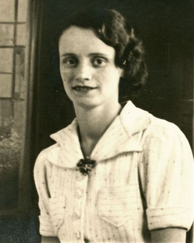
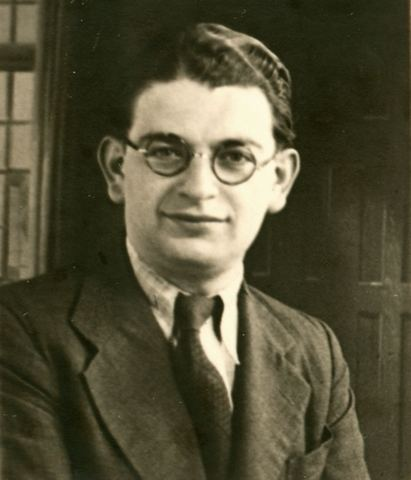
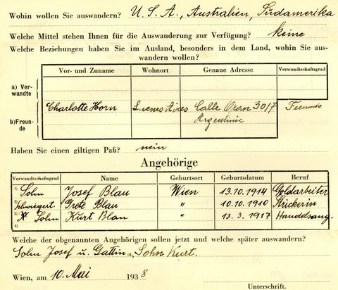

Grete Stör
1910–1942
Life events
| Born | 10 Oct 1910 · Vienna, Austria Map |
|---|---|
| Married | 1938 · Josef 'Joshi' Blau · Leopoldstädter Tempel, 1020 Tempelgasse 5, Vienna, Austria Map |
| Nazi Persecution | |
| Deportation | 15 Aug 1942 · Caserne Dossin (Malines-Mechelen) Concentration Camp, Mechelen, Antwerpen, Belgium Map · Transport III to Auschwitz Birkenau, Extermination Camp, Poland |
| Died | 9 Sep 1942 · Auschwitz Death Camp, Oswiecim, Malopolskie, Poland Map · Murdered by Nazis in the Holocaust |
Family
Grete Stör1910–1942

Josef 'Joshi' Blau1914–1942
Photos

Kurt Blau
Grete Stör

Richard Blau
Kurt Blau
Josef 'Joshi' Blau
Grete Stör
Grete Stör